Parámetros en una Distribución
Cada vez que se logre determinar una distribución existen dos mediciones asociadas con ella que son sumamente importantes: la media y la varianza.
La media o esperanza, como se llama a veces, en alguna forma es una medida de localización de los datos, mientras la varianza es una medida de dispersión de los datos. En las distribuciones teóricas, este par de medidas las caracterizan en forma absoluta y en el caso de las distribuciones que no se ajusten a un patrón conocido constituyen el punto de partida para poder estudiarlas en forma adecuada.
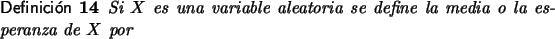
a. Si X es discreta con rango RX = {x1, x2, x3,...} se definen la media o esperanza de X por
con la condición de queb. Mientras si X es continua.
|
|
(3.6) |
La condición que se impone se conoce como convergencia absoluta [8] y se hace necesaria para evitar que el reordenamiento de las sumas pueda producir valores diferentes para la esperanza. De hecho en cada una de las definiciones que sea necesario se indicará.
Note que la media, es una generalización del concepto de promedio aritmético. Por ejemplo si X es una variable aleatoria discreta tal que todos los valores en su rango tienen la misma probabilidad entonces:
En realidad la media o esperanza es un promedio ponderado y cuantifica el valor esperado para una variable aleatoria.
Ejemplo 16
Sea X la variable aleatoria del ejemplo 13. En ese caso el valor de la esperanza es:
significa que en promedio deberán hacerse 2.27 intentos antes de obtener la bolilla roja.
Por ejemplo para la distribución exponencial de parámetro
 , (3.2), usando un poco de integración por
partes y regla de L'Hôpital, se tiene que:
, (3.2), usando un poco de integración por
partes y regla de L'Hôpital, se tiene que:
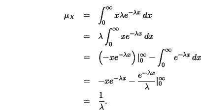
Existen ejemplos de variables aleatorias con distribuciones de probabilidad bien definidas y que no tienen media. Se invita al lector a verificar que si X es una variable aleatoria tal que
entonces la distribución de probabilidad está bien definida pero no existe la esperanza.
Ejemplo 17
Un sistema de administración de oxígeno esta formado por dos bombas idénticas. Estas bombas operan en forma independiente, y tienen una esperanza de funcionamiento continuo que es exponencial con media 20 horas. El sistema de bombeo falla solamente si ambas bombas fallan. Cuál es la probabilidad de que el sistema funcione durante 15 horas.
Solución
Como la media es 20 horas entonces el parámetro de la
distribución es
 = 1/20. Acorde con (3.4) la
probabilidad de que una bomba falle antes de las 15 horas es
1 - e-15/20, así que la probabilidad de que el sistema falle
antes de las 15 horas es
P[X
= 1/20. Acorde con (3.4) la
probabilidad de que una bomba falle antes de las 15 horas es
1 - e-15/20, así que la probabilidad de que el sistema falle
antes de las 15 horas es
P[X  15] = (1 - e-15/20)2 y la probabilidad de que el sistema trabaje en forma continua
por más 15 horas es de
1 - P[X
15] = (1 - e-15/20)2 y la probabilidad de que el sistema trabaje en forma continua
por más 15 horas es de
1 - P[X  15] = 1 - (1 - e-15/20)2.
15] = 1 - (1 - e-15/20)2.
También es posible calcular la esperanza de una función aplicada a los valores de la variable aleatoria.
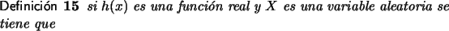
a. Si X es discreta
Para calcular la varianza de una variable aleatoria se necesita
antes conocer la media de X.
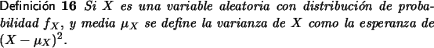
a. Si X es discreta:
b. Si es continua
Invitamos al lector a verificar en la tabla adjunta posibles distribuciones de probabilidad discretas y analizar los valores de la esperanza y de la varianza. En esta tabla puede introducir valores para la variable y las probabilidades respectivas y ver el comportamiento de la media y la varianza.
La siguiente es una propiedad importante de la varianza. Según
la definición de esperanza, en el caso discreto se tiene
| = | |||
| = | (xi - |
||
| = | (xi2 - 2xi |
||
| = | xi2fX(xi) - 2xi |
||
| = | xi2fX(xi) - 2 |
||
| = | 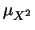 - 2 |
De hecho no es difícil verificar que esta propiedad también se cumple en el caso continuo.
Se llamará momento de orden k a la esperanza de Xk. Es decir el momento de orden k para la variable aleatoria discreta X es
Ejemplo 18
Sea X una variable aleatoria continua con distribución de probabilidad dada por
- Determine el valor de k.
- Calcule
P([- 2 < X
 5]).
5]).
- Calcule VAR(X).
- Dado que
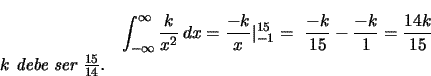 -
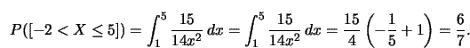 -
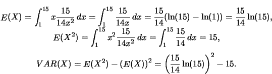
Finalizamos esta sección enunciando un teorema que resume las propiedades fundamentales de la esperanza.
- El valor esperado de una variable aleatoria constante es
la misma constante.
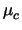 = c.
- El valor esperado de una variable aleatoria multiplicada
por una constante es la constante por el valor esperado de la
variable.
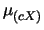 = c
 .
.
- El valor esperado de una suma de
dos variables aleatorias es la suma de los valores esperados de
las variables.
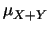 = + 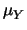.
las siguientes afirmaciones.
- La varianza de una variable aleatoria constante es
cero.
VAR(c) = 0.
- La varianza de una variable aleatoria multiplicada
por una constante es la constante por la varianza de la
variable.
VAR(cX) = c2VAR(X).
- La varianza de una suma de
dos variables aleatorias es la suma de las varianzas de las
variables.
VAR(X+Y) = VAR(X) + VAR(Y).
Nuevamente la demostración de los apartados (1.) y (2.) es bastante directa a partir de la definición y la demostración de (3.) es un poco más delicada. El lector interesado puede verla en [2].